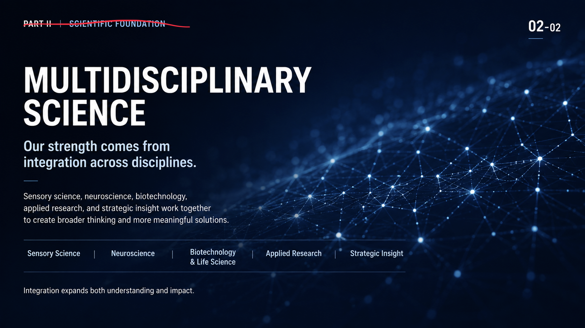
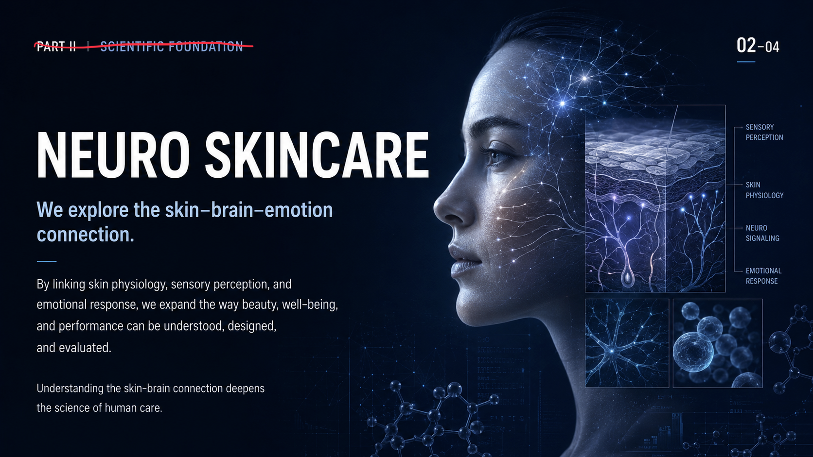
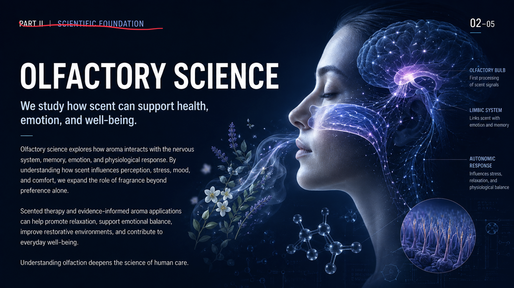
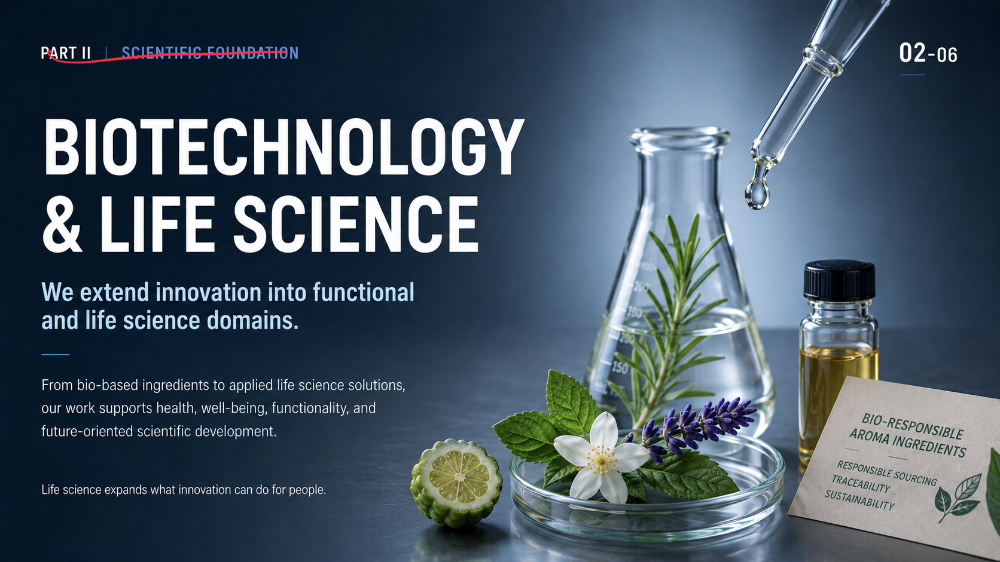

01 Scientific Foundation
Science at Our Core
Research, evidence, and disciplined thinking are the foundation of A&S.
We approach challenges through scientific rigor, cross-functional knowledge, and practical problem-solving, turning complexity into clear and useful direction.
Scientific depth is not a feature of our work. It is the basis of it.
02 Scientific Foundation
Multidisciplinary Science
Our strength comes from integration across disciplines.
Sensory science, neuroscience, biotechnology, applied research, and strategic insight work together to create broader thinking and more meaningful solutions.
Integration expands both understanding and impact.

- Sensory Science
- Neuroscience
- Biotechnology & Life Science
- Applied Research
- Strategic Insight
03 Scientific Foundation
Sensory Science
We study how people perceive, respond, and remember.
From flavor and fragrance to texture, chemesthesis, and multisensory interaction, sensory science helps us understand human experience at a deeper level.
Perception is where human experience begins.
04 Scientific Foundation
Neuro Skincare
We explore the skin-brain-emotion connection.
By linking skin physiology, sensory perception, and emotional response, we expand the way beauty, well-being, and performance can be understood, designed, and evaluated.
Understanding the skin-brain connection deepens the science of human care.

- Sensory Perception
- Skin Physiology
- Neuro Signaling
- Emotional Response
05 Scientific Foundation
Olfactory Science
We study how scent can support health, emotion, and well-being.
Olfactory science explores how aroma interacts with the nervous system, memory, emotion, and physiological response. By understanding how scent influences perception, stress, mood, and comfort, we expand the role of fragrance beyond preference alone.
Scented therapy and evidence-informed aroma applications can help promote relaxation, support emotional balance, improve restorative environments, and contribute to everyday well-being.
Understanding olfaction deepens the science of human care.

- Olfactory Bulb
- First processing of scent signals
- Limbic System
- Links scent with emotion and memory
- Autonomic Response
- Influences stress, relaxation, and physiological balance
06 Scientific Foundation
Biotechnology & Life Science
We extend innovation into functional and life science domains.
From bio-based ingredients to applied life science solutions, our work supports health, well-being, functionality, and future-oriented scientific development.
Life science expands what innovation can do for people.
